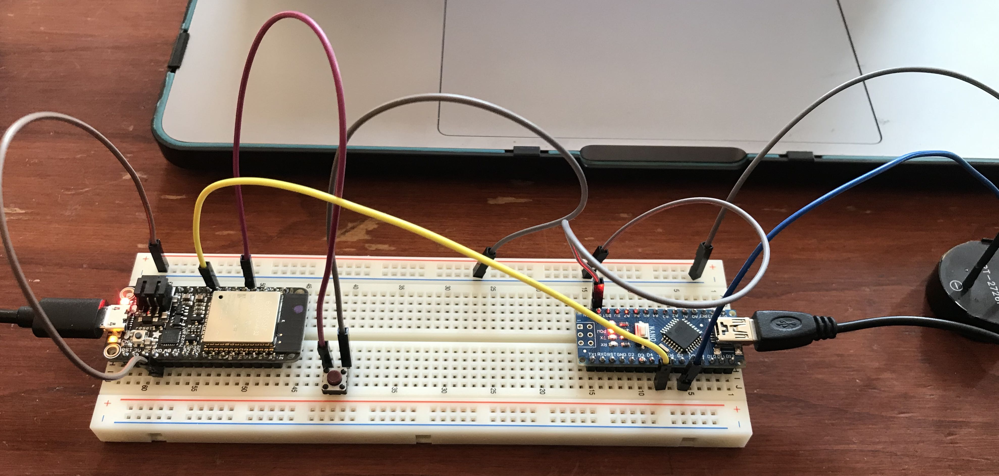

It was a bit of a disapointing week for me because of a struggle with both my ItsyBitsy and ATSAMD11. My hope for this weekend was to build a simple intercom/wireless microphone set up that would let one chip recieve audio, output it as an anolog signal, and send back another monitor signal which could be routed to headphones. I enjoyed exploring the RF24Audio library by TMRh20 which makess two way audio transfer relatively easy.
I'm going to try using a PC in the hope that I will be able to get the Itsybity and its ADC up and running!
To practice getting microcontrollers talking to each other, I used Rob's code to send a buttonState from the Feather to my Nano, which, which played a tone when the button was pressed.
The transmitter code is as follows.
const int out_pin = 13; //naming my pin to send signal to the nano
const int button_pin = 15; //naming my pin to recieve the button press
void setup() {
pinMode(button_pin, INPUT_PULLUP); //setting up the pin the read the button state and include the built in pullup resistor
pinMode(out_pin, OUTPUT); //setting up the pin to send signal to the nano
Serial.begin(9600);
}
void loop() {
int buttonState = digitalRead(button_pin);
Serial.println(buttonState);
digitalWrite(out_pin, buttonState); //sending the button state to the nano
delay(10);
}
The reciever code is as follows.
int val = 0;
void setup() {
pinMode(5, INPUT_PULLUP); //setting pin 5 to recieve input from the Feather
pinMode(7, OUTPUT); //setting pin 7 to send signal to the buzzer
}
void loop() {
val = digitalRead(5); //read the value of the signal
if (val == LOW){ //if the button is pressed...
tone(7, 440); //play an "A"
}
else { //if the button is not pressed...
noTone(7); //don't!
}
}